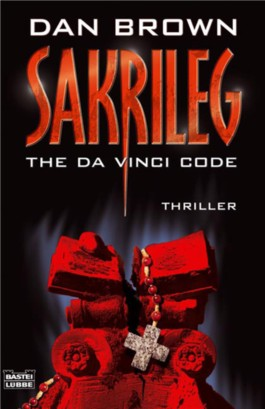
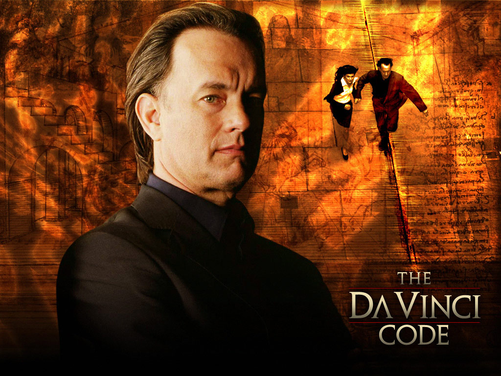
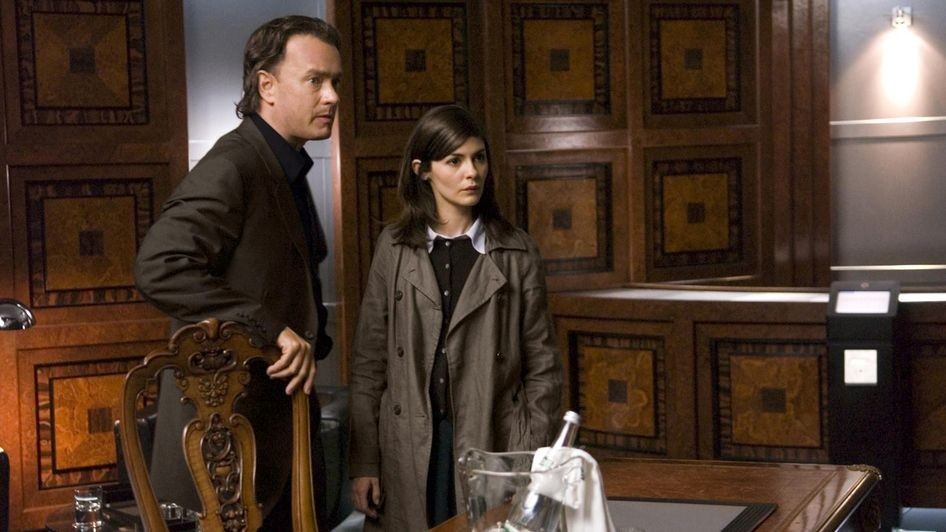
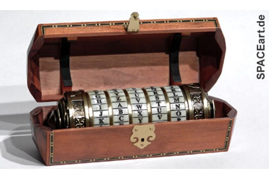
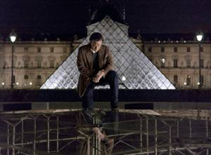

Sakrileg

Dieses Buch ist geschrieben von Dan Brown, sein originelles Titel ist eigentlich The Da Vinci code und hat 607 seiten.
Robert Langdon ist ein simbolen-expert und kommt in Paris fur einer prasentation seiner studien.
Er sollte sich mit dem direktor des louvres, aber gerade an der Nacht kam ein inspektor namens Bezu Fache und sagte dem professor Langdon dass Herr Jacques Saunieres, der Direktor louvres ist tot. Herr Inspektor Fache brachte Mister Langdon zu louvres, wo er sah wie der Direktor sich ein symbol auf sein korper mit seinem Blut gezeichnet hat.

Professor langdon hat das symbol noch gesehen, es ist der symbol der Weiblichen Gottin Saunieres wollte etwas sagen mit dem symbol, aber niemand wusste, das Geheimniss war verloren gegangen.
Saunieres hat eine kode neben sich geschrieben bevor er gestorben ist, er hatte auch noch einige worte geschrieben. Diese hatten kein Verstandniss. Auf einmal kam eine Dame, namens Sophie Neveu. Sie ist eine kryptologin der Pariser Polizei und sie hat die Fibonacci-folge aus der Kode entziffert, aber es war nicht in der guten reihenfolge, also auch die worte waren ein anagram. so entzifferten si einen Namen einer Zeichnung.
fibonacci-folge: 0 1 1 2 3 5 8 13 21 34 55 89 ...
Die zwei blieben alleine und gingen zu der Zeichnung und fanden einige neue worte, professor Langdon war so gut bei der anagram losen, dass er in weniger als funf sekunden schon 3 worte herausgefunden hat.

nachdem sie die Worte entziffert haben, wollten sie weglaufen, aber ein Polizist bedrohte sie mit einer Pistole. Die beiden hatten einen vorteil, wei sie in einem museum waren, und zeigten dem Polizist, dass sie eie Zeichnung, eine sehr wertvolle Zeichnung auf dem Boden werfen werden. Der Polizist horte auf mit den Bedrohungen, und die beiden liefen aus dem Louvres
Professor Langdon lief mit Sophie zu einer Adresse, die sie auf einem Schlussel fanden. Es war eine bank, und die kontos von dort waren auch einige Jahrtausende alt. Sophie gab eine kode ein, also die misgeschriebene Fibonacci-folge, und sie bekamen einen Pakett. Als sie dort waren, wurden sie auf einer schlechten liste geschrieben, die die gesucht sind. Der Bank-arbeiter hat ein alarm Signal zu der polizei geschickt, aber als sie den Pakett holten, kam der Bank-arbeiter und holte sie in einem gepanzertem Auto und sie gingen weit weg.
Robert fand in dem Pakett ein Cryptex, ein zylindrischer ziffer-schachtel mit 5 stellen, je 26 Buchstaben auf jeder stelle. Der Bank-arbeiter bedrohte sie mit der Pistole, und wollte ihnen den cryptex holen. Aber der Professor Langdon hat einen metallischen Ding in der tur geschupst, und der herr konnte es nicht offnen. Robert hat ihm die tur auf dem Kopf geoffnet, und ist bei dem Lenkrad gegangen und jetzt fuhr er das Auto.

Robert und Sophie gingen zu einem alten Freund Roberts, der sehr interessiert in der Geschichte ist, dann sagten sie beide Sophie, wass sie eigentlich suchten. Sie suchten Heilige Maria, die in einen grab liegt. Die drei suchen jetzt und auf einmal finden sie auf dem cryptex eine innschrift, die sagt, dass die kode, der name der einzigen sphere, die in einer genauen Kirche, fehlt.
Robert wird von seinem Freund bedroht und erfahrt, dass sein freund den Herren Saunieres, den Opa Sophies getotet hat. Er will sie toten, aber nur nachdem er die kode des cryptex herausfinden. Er wirft den cryptex nach oben, es bricht, die kammer des papiruses von dem cryptex wird mit saure gefullt und die Polizei kommt, und verhaftet den Freund Roberts.
Robert hohlte aber den papirus heraus, bevor er den cryptex brach und auf dem papirus schrieb die letzte lokation dessuches, die BLUT-LINIE, also nach langdons gedanken, ist es eine Kirche, und dort, erfahrt Sophie, dass sie die Letzte Lebende Nachfolgerin von Jesus Christus ist.
An dem abend als sich langdon rasiert, fliesst ihm blut und es kommt ihm eine idee. Er geht nach der Pariser Blut-linie, und dort findet er nach dem schreiben des Leonardo da vinci, also "Es ist von des Meisters Kunst geshmuckt. Oben Der Kelch. Unten der Winkel. Winkel und Kelch das Grab bewahrt. ...unters Sternzelt endlich geruckt." Langdon kniete neben dem Louvres, genau oberhalb des Grabes der Heiligen Maria.
